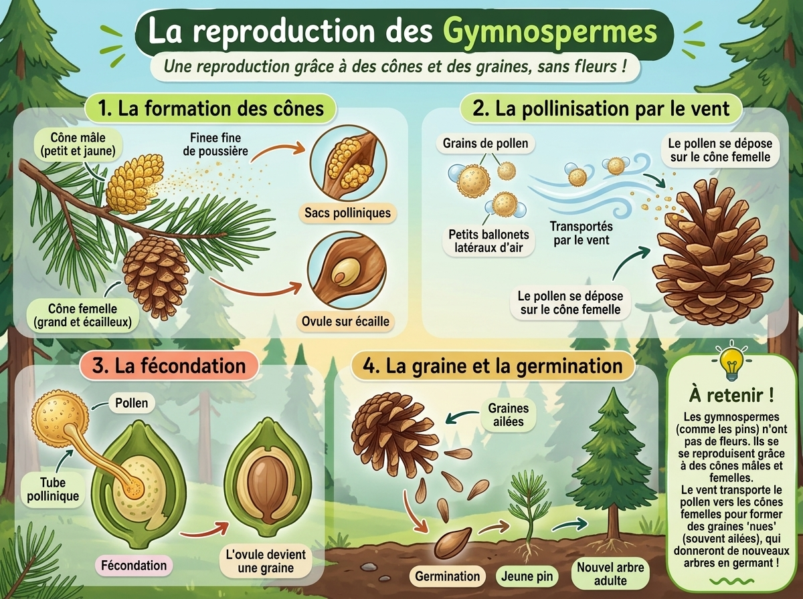
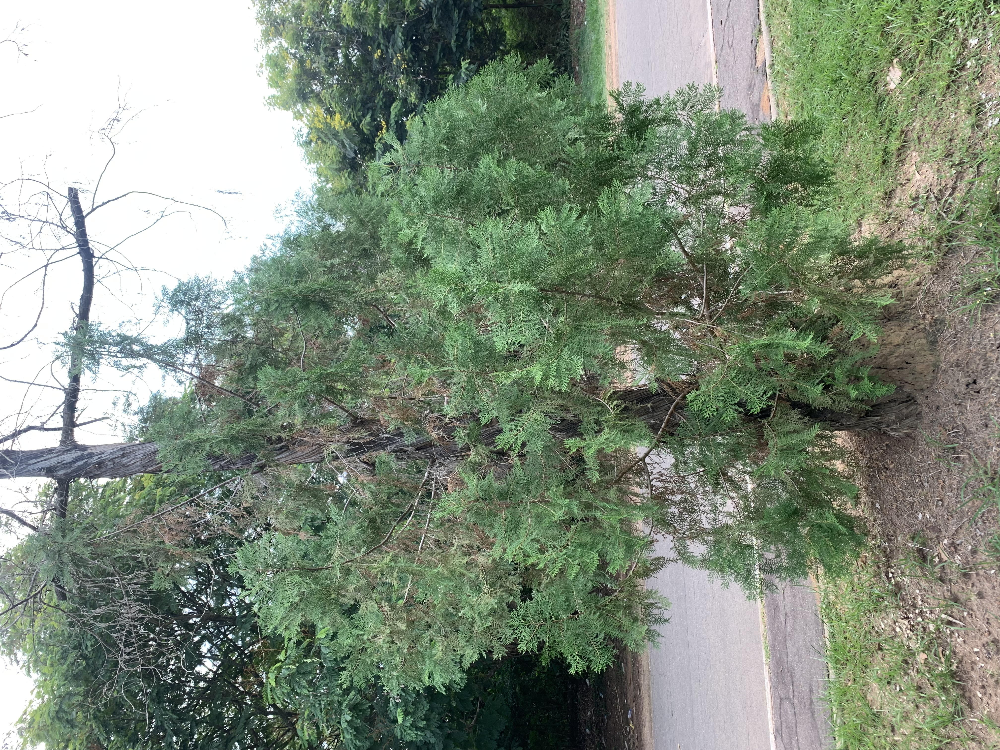

Problème résolu-évolution:
Se reproduire sans eau grâce au pollen et à la graine.
Se reproduire sans eau grâce au pollen et à la graine.
Le pollen est transporté par le vent, il n'a plus besoin de nager dans l'eau. La graine protège l'embryon et lui permet d'attendre les bonnes conditions pour germer. C'est pour ça qu'on les appelle « à graine nue », la graine n'est pas enfermée dans un fruit.

Gynospermes
Pollen, graine nue>
graines ≈ 370 Ma·Dévonien

